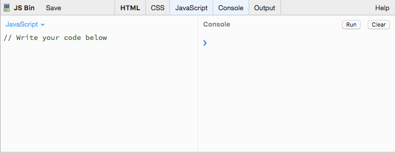
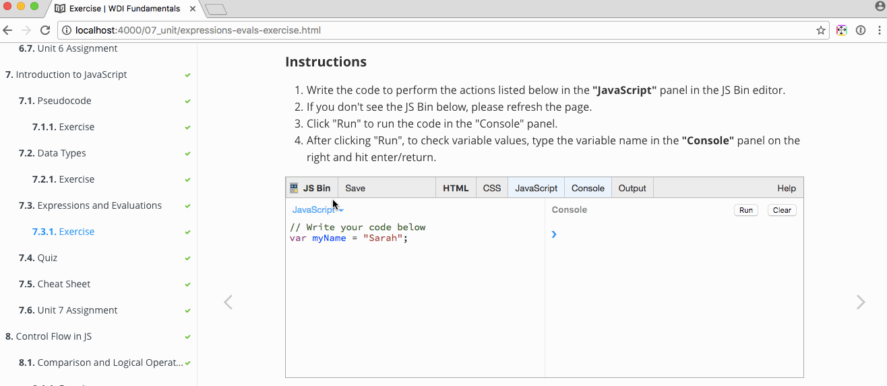

WDI Fundamentals Unit 7
It's time for us to move on to the main event: programming.
In this unit, you'll learn how to think like a programmer and troubleshoot different kinds of problems you may encounter. This kind of programmatic thinking will help you manage the technical skills you'll learn later in the course.
Programmatic thinking is the kind of critical thinking that helps you overcome problems you may face as a programmer. It allows you to solve issues efficiently, learn on your own, and problem solve on the fly.
Programming is like the difference between baking a cake from scratch and baking a cake from a box. When you bake a cake from a box, your cake will come out the same as the next person who purchases the same cake mix.
When you bake a cake from scratch, there are so many different types of cakes you could make, though it's probably more time consuming.
There is no right or wrong way to program, nor is there a right or wrong way to bake a cake.
Do you want your program to work efficiently (or your cake to be baked with fewer ingredients)? Or do you want a more complex program (or bake a fancy wedding cake)?
Whatever your answer, thinking programmatically will help you.
Whatever your approach, eventually you'll run into problems and issues that require programmatic thinking.
Let's take a look at four tips for thinking like a programmer.
Throughout this unit, we'll be exploring some of the more common tools and concepts available to programmers.
Although we will be specifically looking at these concepts in the context of JavaScript, these tools (or similar ones) are present in nearly every modern programming language.
Having a strong understanding of the basics is essential and will translate to your future work, whether you end up programming in JavaScript, Ruby, Python, or any other language.
To start playing around with JavaScript, we'll be using a website called JS Bin.

As you can see in the screenshot above, JS Bin features different window panes.
On the left is the editor, or "JavaScript" panel. This is where you will be writing your JavaScript code.
On the right is the "Console" panel. To execute the code in your editor, click the "Run" button here. This is where we will see the output of our script.
After writing your JavaScript into the "JavaScript" panel and clicking the "Run" button, you will be testing the values for different variables (which we will be covering shortly) by typing the variable name into the right panel, the "Console", and then hitting the enter/return key.

To save your JS Bin session, click "Login or Register" at the top, and log in with GitHub. When you select "File," followed by "New," you'll open a blank workspace.
The moment you begin writing code, JS Bin will generate a URL that you can bookmark and come back to at any time.
You can hide or display any panels (HTML, CSS, JavaScript, or Console) as needed by clicking on the tabs at the top of the editor.
Ready to begin? Let's go.